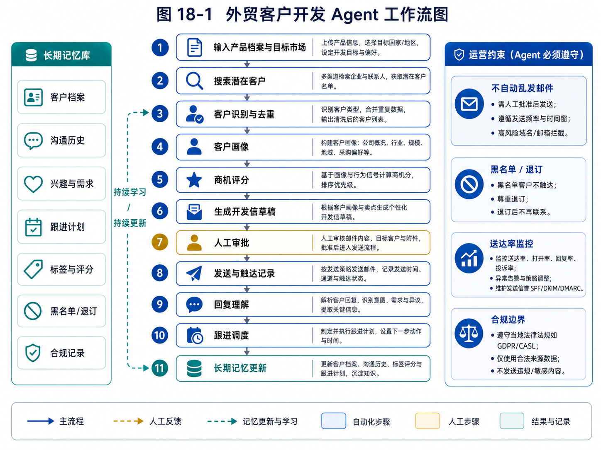

第 18 章：项目二：外贸客户开发 Agent
外贸客户开发 Agent 的价值链较长，建议先通过流程图建立全局视角，再阅读各子模块设计。

图 18-1 外贸客户开发 Agent 工作流图
如果说第 17 章的任务型研究 Agent 解决的是“如何围绕一个问题收集信息、提取证据、形成报告”，那么本章的外贸客户开发 Agent 要解决的就是更接近真实商业的问题：如何围绕一个明确产品和目标市场，持续发现潜在客户，判断客户价值，生成可审核的触达内容，并把后续跟进纳入长期任务系统。
这是全书最重要的综合项目之一。原因很简单：外贸客户开发既有真实商业价值，又非常适合体现 Agent 的系统能力。它不是一次性问答，也不是简单工具调用，而是一个由研究、搜索、识别、筛选、评分、写作、审批、触达、跟进和记忆组成的长链路任务。
一个普通聊天模型可以写开发信，可以翻译产品介绍，也可以给出一些找客户的建议。但一个真正有用的外贸客户开发 Agent，必须能持续工作：今天找到哪些客户，哪些被排除，哪些已经联系，哪些回复过，哪些需要三天后跟进，哪些客户类型更适合，哪些搜索关键词效果更好，哪些国家的客户质量更高。这些都不是一次 prompt 能解决的。
本章会以“钢卷尺 / 五金工具类产品出口”为主要示例，但方法并不局限于这个品类。你可以把它迁移到清洁用品、拖把、小家居、机械配件、包装材料、工业耗材等 B2B 外贸场景。我们关注的不是某个具体产品的投机技巧，而是外贸获客 Agent 的通用系统设计。
18.1 为什么外贸客户开发适合做 Agent
外贸客户开发是一类典型的开放任务。
用户的目标通常不是“回答一个问题”，而是“帮我找到可能成交的客户”。这句话背后隐藏了很多判断：什么是可能成交？客户是进口商、批发商、分销商、工程用品供应商，还是电商卖家？目标国家有哪些渠道？客户是否真的经营相关产品？联系方式是否有效？客户规模如何？是否已经联系过？是否值得优先投入时间？开发信应该如何写？回复后如何跟进？
传统自动化很难完整覆盖这些判断。你当然可以写脚本抓取某些网站，也可以用规则提取邮箱，但客户质量判断、业务匹配、邮件内容个性化、回复理解和跟进策略都存在不确定性。Agent 的价值就在于处理这些不确定环节。
外贸客户开发也不是完全自由任务。它有稳定业务流程：确定产品，选择市场，搜索线索，筛选客户，生成画像，评分排序，写开发信，人工审核，触达记录，后续跟进。这个流程可以被工作流约束，而流程内部的判断可以交给模型。这正是前面章节讲过的“工作流 + Agent 节点”的典型场景。
更重要的是，外贸客户开发有明确结果反馈。客户是否回复，回复是否有效，是否进入报价，是否打样，是否成交，这些都可以作为后续评估信号。相比很多“看起来智能但价值难量化”的 Agent，外贸 Agent 更容易和业务指标绑定。
但它也有风险。Agent 不能自动乱发邮件，不能编造工厂能力，不能承诺不存在的认证，不能频繁轰炸客户，不能把竞争对手当客户，不能把无效邮箱当成有效线索。外贸 Agent 必须有审批、记录、去重、权限和合规边界。
所以，外贸客户开发 Agent 是一个非常好的综合训练项目。它会迫使我们把前面学过的机制真正串起来。
18.2 本章目标与系统边界
本章要设计并实现的是一个 Mini Foreign Trade Lead Agent。它不是完整 CRM，也不是全自动外贸业务员，而是一个以“发现和初步开发客户”为核心的 Agent 系统。
它的输入包括：
产品信息，例如钢卷尺、规格、材质、包装、MOQ、交期、认证、价格区间；
目标国家或地区，例如阿联酋、沙特、波兰、墨西哥、智利；
目标客户类型，例如进口商、批发商、分销商、五金连锁、工程用品供应商；
排除条件，例如零售小店、终端消费者、无关行业、竞争对手、已开发客户；
触达风格，例如简洁、专业、不过度营销；
风险规则，例如邮件必须审批，不允许自动发送。
它的输出包括：
客户线索列表；
客户画像；
商机评分；
推荐优先级；
开发信草稿；
审批队列；
触达记录；
跟进建议；
执行轨迹。
本章暂时不做以下事情：
不自动发送邮件；
不绕过网站反爬；
不批量轰炸邮箱；
不自动承诺价格和交期；
不直接写入真实 CRM；
不做复杂多账号邮件系统；
不保证找到的客户一定成交。
这个边界非常重要。外贸 Agent 的第一阶段目标不是替代外贸业务员，而是成为业务员的“客户发现与初筛助手”。它应该帮助人更快地找到候选客户、更清楚地判断优先级、更高效地生成触达内容，但关键动作仍然需要人确认。
18.3 外贸客户开发的业务流程拆解
在设计 Agent 之前，必须先理解业务流程。否则很容易做成一个“能搜索网页、能写邮件”的玩具，而不是实际可用的获客系统。
一个较完整的外贸客户开发流程可以分为十个阶段。
第一阶段，产品建档。系统需要知道你卖什么。对于钢卷尺来说，需要记录规格、长度、外壳材质、尺带宽度、精度等级、包装方式、是否支持 OEM、MOQ、交期、价格区间、目标应用场景等。
第二阶段，目标市场设定。用户选择国家或地区，并说明为什么选择。例如中东五金渠道、拉美批发市场、欧洲工业用品分销等。不同市场搜索语言、渠道网站和客户类型不同。
第三阶段，客户类型定义。不是所有买家都适合。对于工厂来说，可能更适合进口商、批发商、品牌商、五金连锁、工程用品分销商，而不是单个零售店。
第四阶段，搜索策略生成。Agent 根据产品、市场和客户类型生成搜索关键词、站点类型和排除词。例如“hardware tools importer UAE”、“measuring tape wholesaler Saudi Arabia”、“construction tools distributor Poland”。
第五阶段，线索收集。Agent 调用搜索工具、目录工具、地图工具或行业网站工具，获得候选公司。
第六阶段，客户识别。Agent 阅读公司网站或资料，判断它是否真的是目标客户。这里要识别公司主营、客户类型、国家、联系方式、产品相关性。
第七阶段，去重和排除。系统排除重复公司、无关行业、零售小店、竞争对手、已触达客户和黑名单客户。
第八阶段，客户画像与评分。系统为候选客户生成画像，并根据匹配度、规模信号、联系方式质量、采购可能性等维度评分。
第九阶段，开发信草稿。Agent 针对高优先级客户生成个性化开发信，但只创建草稿，不自动发送。
第十阶段，触达记录与跟进。用户审核并发送后，系统记录触达时间、内容、客户反馈和下一步动作。
这个流程说明，外贸 Agent 不是一个搜索工具，而是一个长链路业务系统。每个阶段都可以引入 Agent 能力，但也需要规则、状态和人工确认。
18.4 系统架构
外贸客户开发 Agent 可以设计为多个模块协作。
Product Profile
↓
Market Research Worker
↓
Search Strategy Planner
↓
Lead Discovery Worker
↓
Lead Classification Worker
↓
Deduplication & Filtering
↓
Lead Profile Builder
↓
Opportunity Scoring
↓
Email Draft Generator
↓
Approval Queue
↓
Outreach History
↓
Follow-up Scheduler
每个模块的职责如下。
Product Profile 负责保存产品事实。所有开发信和客户判断都必须基于产品档案，不能让模型随意编造。
Market Research Worker 负责研究目标市场，例如当地渠道、常见客户类型、搜索关键词、行业网站和风险点。它可以复用第 17 章的研究 Agent。
Search Strategy Planner 负责生成搜索策略，包括关键词、语言、站点类型、排除词、优先级。
Lead Discovery Worker 负责执行搜索，收集候选客户。
Lead Classification Worker 负责判断候选公司类型，区分进口商、批发商、分销商、零售商、制造商、竞争对手和无关公司。
Deduplication & Filtering 负责去重和排除。
Lead Profile Builder 负责生成客户画像。
Opportunity Scoring 负责商机评分。
Email Draft Generator 负责生成开发信草稿。
Approval Queue 负责人工审批。
Outreach History 负责记录触达历史。
Follow-up Scheduler 负责后续跟进。
这套架构体现了一个原则：不要用一个大 Agent 包办所有事情。外贸获客链路很长，如果全部交给一个 Agent 自由执行，调试会非常困难。更好的方式是把系统拆成多个职责清晰的 Worker，每个 Worker 有明确输入、输出和评估标准。
18.5 产品档案：不能让 Agent 编造工厂能力
外贸 Agent 的第一块基础数据是产品档案。没有产品档案，Agent 就会根据常识写开发信，很容易编造。
例如，钢卷尺产品档案可以包括：
{
"product_name": "Steel Measuring Tape",
"category": "Hand Tools / Measuring Tools",
"specifications": [
"3m x 16mm",
"5m x 19mm",
"7.5m x 25mm",
"10m x 25mm"
],
"features": [
"durable ABS case",
"clear printed blade",
"metric and imperial scale options",
"OEM packaging available"
],
"target_customers": [
"hardware wholesalers",
"tool distributors",
"construction supply companies",
"retail chains"
],
"moq": "To be confirmed by human",
"lead_time": "To be confirmed by human",
"certifications": [],
"forbidden_claims": [
"Do not claim CE certification unless confirmed",
"Do not promise exact price automatically",
"Do not promise exclusive agency automatically"
]
}
这里有一个重要设计：对于不确定信息，不要让 Agent 自己补。比如 MOQ、交期、认证和价格，如果没有准确数据，应该写“需人工确认”，而不是让模型凭经验生成。
外贸开发信中最危险的错误之一，就是承诺不存在的能力。例如写“we have CE and ISO certification”，但实际没有；写“we can deliver within 7 days”，但实际交期不确定；写“best factory price”，但没有报价依据。这些错误会损害信任，甚至带来合同风险。
所以 Product Profile 不只是资料库，也是约束系统。Email Draft Generator 必须从 Product Profile 读取可用事实，并遵守 forbidden_claims。
18.6 客户数据模型
客户线索必须结构化。不要只保存一个公司名和邮箱。外贸业务员真正需要的是判断依据。
可以设计 Lead 数据模型：
from dataclasses import dataclass, field
from typing import List, Optional
@dataclass
class Lead:
company_name: str
website: Optional[str]
country: str
source_url: str
company_type: str = "unknown"
relevance_summary: str = ""
product_match: float = 0.0
contact_emails: List[str] = field(default_factory=list)
contact_names: List[str] = field(default_factory=list)
phone_numbers: List[str] = field(default_factory=list)
social_links: List[str] = field(default_factory=list)
evidence: List[str] = field(default_factory=list)
exclusion_reason: Optional[str] = None
score: float = 0.0
status: str = "new"
关键字段解释如下。
company_type 表示客户类型，例如 importer、wholesaler、distributor、retailer、manufacturer、competitor、irrelevant。
product_match 表示产品匹配度。一个经营手动工具的批发商匹配度较高，一个只卖电动工具的公司匹配度中等，一个只做家具的公司匹配度低。
relevance_summary 是 Agent 对客户相关性的解释。用户不能只看分数，还要看为什么。
evidence 是判断依据。例如“官网 Products 页面包含 measuring tools / hand tools”，“About 页面说明其为 GCC hardware distributor”。
exclusion_reason 表示排除原因。被排除的客户也应该记录，避免下次重复处理。
status 表示线索状态，例如 new、qualified、rejected、draft_created、approved、contacted、replied、follow_up、closed。
这个模型比简单表格复杂，但它能支撑长期运营。外贸获客不是一次搜索，而是不断积累客户资产。
18.7 搜索策略生成
搜索策略决定线索质量。很多人找不到客户，不是因为没有工具，而是搜索问题设计得太差。
对于钢卷尺，直接搜索 “measuring tape buyer” 往往效果一般。更好的搜索策略要结合产品、客户类型、国家和渠道语言。
例如目标国家是 UAE，客户类型是五金批发商，可以生成：
UAE hardware tools importer
Dubai hand tools wholesaler
measuring tools distributor UAE
construction tools supplier Dubai
hardware trading company UAE measuring tape
site:.ae "hand tools" "measuring tape"
如果目标是沙特，可以生成：
Saudi Arabia hardware distributor
Riyadh tools wholesaler
Jeddah construction tools supplier
measuring tape supplier Saudi Arabia
site:.sa "hand tools" "measuring tools"
搜索策略生成模块应该输出结构化结果：
{
"market": "UAE",
"queries": [
{
"query": "Dubai hand tools wholesaler measuring tape",
"target_type": "wholesaler",
"priority": 1,
"reason": "Dubai is a regional trading hub and hand tools wholesaler is close to target customer type."
},
{
"query": "site:.ae \"measuring tools\" \"hardware\"",
"target_type": "local company website",
"priority": 2,
"reason": "Country domain restriction may improve local relevance."
}
],
"negative_keywords": ["retail only", "amazon", "individual", "used tools"]
}
这里的 reason 很重要。它可以帮助用户理解为什么这样搜，也便于后续根据结果反馈优化策略。
搜索策略还应该支持迭代。如果第一批搜索结果质量差，Agent 应该调整关键词。例如发现“measuring tape importer”找不到太多客户，可以转向更宽泛的“hand tools distributor”，再在客户网站中判断是否经营测量工具。
这体现了 Agent 的价值：不是机械搜索一个关键词，而是根据结果调整策略。
18.8 客户识别：判断它是不是目标客户
线索收集后，最关键的是客户识别。
搜索结果中出现一个公司，并不代表它是目标客户。它可能是零售店、装修公司、制造商、平台页面、新闻文章、目录页、竞争对手或无关公司。Lead Classification Worker 的任务，就是判断候选公司类型。
判断时可以使用以下信号。
网站 About 页面是否说明公司是 importer、distributor、wholesaler、trading company。
Products 页面是否包含 hand tools、measuring tools、construction tools、hardware 等相关品类。
是否有多个品牌代理或大类产品目录。
是否面向 B2B 客户，例如 dealers、contractors、projects、bulk order。
是否有公司地址、电话、邮箱、采购或销售部门联系方式。
是否有仓库、展厅、分销网络、批发业务描述。
是否只是单个零售门店或电商小店。
是否生产同类产品，可能是竞争对手。
可以设计分类 prompt：
你是外贸客户识别助手。请根据给定公司资料判断其客户类型。
产品：钢卷尺 / 手动测量工具
目标客户：进口商、批发商、分销商、五金连锁、工程用品供应商
排除：零售小店、终端消费者、无关行业、竞争对手
请输出 JSON：
company_type, product_match, is_target_customer, evidence, risk_flags, exclusion_reason
示例输出：
{
"company_type": "hardware_distributor",
"product_match": 0.78,
"is_target_customer": true,
"evidence": [
"Website lists hand tools and construction tools categories.",
"About page describes the company as a supplier to contractors and dealers."
],
"risk_flags": ["No direct purchasing contact found"],
"exclusion_reason": null
}
对于不确定客户，不要强行分类。可以标记为 needs_review。例如公司网站信息很少，只能看到“General Trading”，但没有产品目录。这类客户可以进入低优先级或人工复核队列。
18.9 去重与排除
外贸线索系统必须去重。否则用户会很快失去信任。
去重可以按多个层级进行。
第一，按网站域名去重。同一个公司不同页面可能被多次搜索到。
第二，按公司名称相似度去重。例如 “ABC Hardware Trading LLC” 和 “ABC Hardware” 可能是同一家公司。
第三，按邮箱域名去重。如果多个线索共享同一企业邮箱域名，可能属于同一公司。
第四，按地址或电话去重。某些目录会重复收录同一公司。
简单实现可以先使用域名去重：
from urllib.parse import urlparse
def company_domain(url: str) -> str:
host = urlparse(url).netloc.lower()
if host.startswith("www."):
host = host[4:]
return host
更进一步，可以使用相似度匹配：
import difflib
def similar_name(a: str, b: str) -> float:
return difflib.SequenceMatcher(None, a.lower(), b.lower()).ratio()
排除也同样重要。排除原因要记录下来。例如：
exclusion_reason: "Retail-only store, no wholesale or distribution signal."
exclusion_reason: "Manufactures measuring tapes, likely competitor."
exclusion_reason: "No relation to hand tools or hardware."
exclusion_reason: "Already contacted on 2026-05-01."
不要简单删除被排除客户。被排除记录是系统资产。否则下次搜索又会把同一家公司找回来，浪费时间。
18.10 客户画像：让业务员快速判断
客户画像的目的，是帮助人快速理解这个客户为什么值得看。
一个有效客户画像不需要很长，但要包含关键业务判断：
公司是谁；
在哪个国家；
它是什么类型客户；
主营什么产品；
和我们的产品有什么匹配；
有什么规模或价值信号；
联系方式质量如何；
有什么风险或不确定性；
建议下一步怎么做。
示例：
## ABC Hardware Trading LLC
- 国家：UAE
- 类型：五金工具分销商
- 匹配度：高
- 主要业务：手动工具、建筑工具、测量工具、施工耗材
- 匹配依据：官网产品目录包含 hand tools 与 measuring tools，客户群体包括 contractors 和 retailers
- 价值信号：有多个产品大类，公开展示批发与项目供应能力
- 联系方式：info@..., sales@...
- 风险：未找到明确采购负责人；需要人工确认是否进口自中国
- 建议动作：生成简洁型开发信，重点突出 OEM、常规规格和稳定供货能力
客户画像应该避免过度想象。比如如果网站没有说明“年采购额很大”，就不能写“采购量大”。可以写“存在规模信号”，并说明依据是什么。
画像生成仍然要基于 Lead evidence。不要让模型凭行业常识扩写过头。
18.11 商机评分模型
商机评分不是为了给客户贴一个绝对准确的分数，而是为了帮助用户排序。外贸业务员时间有限，应该优先处理更有可能产生价值的客户。
一个简单评分模型可以包括以下维度。
产品匹配度，权重 30%。客户是否经营相关品类。
客户类型匹配，权重 25%。进口商、批发商、分销商通常高于零售店。
联系方式质量，权重 15%。是否有企业邮箱、销售邮箱、联系人、电话。
规模信号，权重 15%。是否有多门店、仓库、品牌代理、项目供应、较完整网站。
市场优先级，权重 10%。目标国家是否是用户重点市场。
风险扣分，权重 5% 或更多。信息不完整、疑似竞争对手、无关行业、已联系等。
可以表示为：
def score_lead(lead, market_priority: float = 1.0) -> float:
score = 0.0
score += lead.product_match * 30
score += customer_type_score(lead.company_type) * 25
score += contact_quality_score(lead) * 15
score += scale_signal_score(lead) * 15
score += market_priority * 10
score -= risk_penalty(lead) * 10
return max(0, min(100, score))
评分函数中有些部分可以规则化，有些部分可以由模型辅助判断。例如 company_type_score 可以规则化：distributor 0.9，wholesaler 0.85，retailer 0.3，competitor 0。scale_signal_score 可以由模型根据证据判断，但要输出理由。
评分结果必须解释。不要只给 87 分。应该写：
评分：82/100
原因：产品目录包含 hand tools 与 measuring tools；公司类型为五金分销商；联系方式包含 sales 邮箱；网站展示多个品牌和项目供应能力。
扣分：未找到采购负责人；未确认是否直接进口。
可解释评分比复杂黑箱评分更适合早期系统。用户需要理解为什么优先联系它。
18.12 开发信生成：只生成草稿，不自动发送
开发信生成是外贸 Agent 最容易被误解的部分。很多人以为外贸 Agent 的核心是“自动写开发信”。实际上，开发信只是整个获客流程的一个节点，而且必须被严格约束。
开发信生成要遵守几个原则。
第一，只能使用产品档案中确认的信息。不能编造认证、价格、交期、客户案例。
第二，要结合客户画像，但不能假装过度了解客户。比如可以写“we noticed your company supplies hand tools and construction products”，前提是网站确实有相关证据。不能写“we know you are looking for measuring tapes”这种没有依据的话。
第三，要简洁。很多开发信太长、太营销化，会降低回复率。早期联系重点是建立相关性和引导回复。
第四，要支持人工编辑。Agent 生成的是草稿，不是最终邮件。
第五，要进入审批队列，不自动发送。
开发信 prompt 可以这样写：
你是外贸开发信草稿助手。请根据产品档案和客户画像生成一封英文开发信草稿。
要求：
1. 只使用产品档案中确认的信息；
2. 不承诺价格、交期、认证，除非资料中明确提供；
3. 语气简洁、专业、不过度营销；
4. 针对客户业务做轻度个性化；
5. 结尾引导对方回复是否有采购计划或常规规格需求；
6. 输出 subject 和 body；
7. 标注使用了哪些客户证据。
示例草稿：
Subject: Steel measuring tapes for your hand tools range
Hi [Name],
I noticed that your company supplies hand tools and construction-related products in the UAE market. We manufacture steel measuring tapes in common specifications such as 3m, 5m, 7.5m and 10m, with OEM packaging options available.
If measuring tapes are part of your regular product range, I would be glad to share our catalog and discuss the specifications you usually purchase.
Best regards,
[Your Name]
注意，这封邮件没有夸大，没有虚构客户需求，没有承诺价格，也没有写一堆空泛优势。这更接近真实 B2B 初次触达。
18.13 审批队列：外贸 Agent 的安全阀
审批队列是外贸 Agent 必须有的模块。
原因很简单：邮件触达是高风险动作。发错对象、发错内容、重复发送、承诺错误信息，都会损害业务。Agent 可以生成草稿，但不能自动发送。
审批队列应该展示：
客户名称；
客户评分；
客户画像；
开发信 subject 和 body；
个性化依据；
风险提示；
可编辑区域；
审批动作：通过、修改、拒绝、稍后处理。
审批对象可以这样设计：
@dataclass
class ApprovalItem:
id: str
lead_id: str
action_type: str # email_draft
draft_subject: str
draft_body: str
evidence_used: list[str]
risk_warnings: list[str]
status: str = "pending"
审批通过后，也不一定由 Agent 发送。早期系统可以只导出草稿，让用户手动复制到邮箱。这样虽然不够自动化，但安全，适合验证阶段。等系统稳定后，再接入 Gmail 或企业邮箱草稿接口，仍然只创建 draft，不直接 send。
审批队列也是学习数据来源。用户修改了哪些内容？拒绝了哪些草稿？原因是什么？这些都可以反馈给系统，优化后续生成。
18.14 触达记录与跟进调度
外贸开发不是发一封邮件就结束。真正重要的是跟进。
系统需要记录每次触达：
联系了哪个客户；
使用哪个邮箱；
发送了什么内容；
发送时间；
当前状态；
是否回复；
回复内容摘要；
下一步动作。
OutreachHistory 可以这样设计：
@dataclass
class OutreachRecord:
lead_id: str
channel: str
contact: str
subject: str
body: str
sent_at: str
status: str = "sent"
reply_summary: str = ""
next_action: str = ""
next_action_date: str = ""
如果客户没有回复，系统可以建议 5 到 7 天后轻量跟进；如果客户回复“send catalog”，系统建议发送产品目录；如果客户询价，系统建议人工确认价格和交期；如果客户明确拒绝，系统标记为 rejected，避免继续骚扰。
回复理解可以由 Agent 辅助：
请阅读客户回复，判断意图：
- interested
- request_catalog
- request_price
- not_interested
- wrong_contact
- unsubscribe
- unclear
同时给出建议下一步动作。
但涉及报价、合同、付款、样品寄送等动作，必须人工处理。Agent 可以准备信息和建议，不能替代业务判断。
跟进调度可以复用第 10 章 Long-running Agent 的 scheduler。它本质上是一个未来任务：在某天提醒用户跟进某个客户，并生成建议话术。
18.15 记忆系统：让 Agent 越用越懂业务
外贸 Agent 的长期价值来自记忆。一次性搜索客户只是工具，持续积累客户资产才是系统。
需要记忆的信息包括：
产品事实，例如规格、包装、MOQ、交期、可做 OEM；
用户偏好，例如开发信要简洁，不要夸张营销；
目标市场经验，例如某些国家搜索哪些关键词有效；
客户历史，例如已联系、已回复、已拒绝、需跟进；
排除名单，例如竞争对手、无关客户、黑名单域名；
成功案例，例如某类客户更容易回复；
失败经验，例如某类目录站线索质量差。
但不是所有东西都应该自动记忆。比如一次临时搜索中的错误判断、用户随口说的短期偏好、未经确认的客户信息，都不应该直接进入长期记忆。
可以把记忆分成几类：
ProductMemory：产品事实，需人工确认后写入。
PreferenceMemory：用户偏好，可由用户确认或多次行为推断。
LeadMemory：客户状态和触达历史，系统自动写入。
MarketMemory：市场搜索经验，需评估后沉淀。
BlacklistMemory：排除名单，需明确依据。
记忆系统的关键不是记得多，而是记得准。外贸 Agent 如果把错误客户记为高价值，后续会持续浪费时间；如果把临时话术偏好当成永久偏好，会影响所有开发信；如果把未确认报价写入产品事实，会造成更大风险。
因此，产品事实类记忆必须人工确认；客户状态类记忆可以自动记录；市场经验类记忆可以先作为低置信度经验，经过多次验证后提升置信度。
18.16 最小实现：ForeignTradeLeadAgent
下面给出一个简化版执行流程。
class ForeignTradeLeadAgent:
def __init__(self, model, search_tool, product_store, lead_store, approval_queue, trace_store):
self.model = model
self.search_tool = search_tool
self.product_store = product_store
self.lead_store = lead_store
self.approval_queue = approval_queue
self.trace_store = trace_store
def run_discovery(self, product_id: str, market: str, target_customer_types: list[str]):
product = self.product_store.get(product_id)
self.trace_store.record("product_loaded", product)
strategy = self.plan_search_strategy(product, market, target_customer_types)
self.trace_store.record("search_strategy_created", strategy)
candidates = self.discover_candidates(strategy)
self.trace_store.record("candidates_discovered", candidates)
classified = self.classify_candidates(product, candidates, target_customer_types)
self.trace_store.record("candidates_classified", classified)
qualified = self.deduplicate_and_filter(classified)
self.trace_store.record("leads_qualified", qualified)
profiled = self.build_profiles(product, qualified)
scored = self.score_leads(profiled, market)
self.lead_store.save_many(scored)
self.trace_store.record("leads_scored", scored)
drafts = self.create_email_drafts(product, scored)
for draft in drafts:
self.approval_queue.add(draft)
self.trace_store.record("drafts_created_for_approval", drafts)
return scored
注意，这个流程最后只是把邮件草稿加入审批队列，没有发送邮件。这是安全边界。
每个方法都可以进一步拆解。例如 classify_candidates 调用客户识别 prompt，deduplicate_and_filter 调用规则和历史记录，create_email_drafts 调用产品档案和客户画像生成草稿。
第一版可以只使用 CSV 或 SQLite 保存 Lead。不要一开始就做复杂 CRM。先验证线索质量和用户是否愿意使用。
18.17 评估指标：如何判断外贸 Agent 是否有用
外贸 Agent 的评估不能只看“生成了多少客户”。数量多不代表有价值。更重要的是质量和转化。
可以设计以下指标。
线索相关率：候选客户中真正属于目标客户类型的比例。
去重准确率：重复客户是否被正确合并。
排除准确率：无关客户、零售小店、竞争对手是否被正确排除。
联系方式有效率：邮箱、电话或联系表单是否可用。
评分排序有效性：高分客户是否更值得人工处理。
开发信可用率：草稿中有多少可以经过轻微修改后发送。
人工修改率：用户需要大改的比例。
回复率：触达后客户回复比例。
有效回复率：回复中真正有采购或沟通价值的比例。
成交前置信号：是否进入报价、样品、进一步沟通。
同时还要评估安全指标：
是否出现编造产品能力；
是否重复触达同一客户；
是否向排除客户生成邮件；
是否违反 forbidden_claims；
是否绕过审批。
这些指标可以分阶段使用。早期没有真实发送邮件时，可以先看线索相关率、画像可用率、开发信可用率。后期接入触达记录后，再看回复率和有效回复率。
外贸 Agent 的核心评估问题是：它是否节省了业务员时间，并提升了高质量客户处理效率。
18.18 常见失败模式
第一种失败，是找了一堆不相关公司。原因通常是搜索策略太泛，或者客户识别不严格。修复方法是加强目标客户定义和排除规则。
第二种失败，是把零售店当成批发商。修复方法是识别 B2B 信号，例如 wholesale、distributor、dealers、bulk order、brands、projects。
第三种失败，是把竞争对手当客户。修复方法是识别 manufacturer、factory、producer 等信号，并结合产品类别判断。
第四种失败，是客户画像过度推测。修复方法是所有画像判断都附带 evidence，没有证据就标记不确定。
第五种失败，是开发信太模板化。修复方法是轻度引用客户业务信息，但不要过度个性化到显得虚假。
第六种失败，是编造产品能力。修复方法是产品档案白名单和 forbidden_claims 检查。
第七种失败，是重复开发同一客户。修复方法是 LeadMemory 和 OutreachHistory。
第八种失败，是触达后没有跟进。修复方法是 Follow-up Scheduler。
第九种失败，是用户不信任评分。修复方法是可解释评分，展示加分和扣分原因。
第十种失败，是系统试图全自动。修复方法是保留审批队列，把 Agent 定位为业务员助手，而不是无人监管的发送机器。
18.19 产品化界面应该长什么样
虽然本章重点是后端机制，但外贸 Agent 最终必须有产品界面。一个可用界面至少包括以下页面。
产品档案页：维护产品规格、卖点、限制、认证、MOQ、交期、价格规则和 forbidden_claims。
市场任务页：创建目标国家和客户类型任务，查看任务进度。
搜索策略页：展示 Agent 生成的关键词、搜索渠道和调整建议。
线索列表页：按评分、国家、客户类型、状态筛选客户。
客户详情页：展示客户画像、证据、联系方式、风险和历史触达。
审批队列页：审核开发信草稿，通过、修改或拒绝。
跟进任务页：展示未来需要跟进的客户和建议动作。
效果看板页：统计线索数量、合格率、草稿可用率、回复率、有效回复率。
这个界面不是锦上添花，而是 Agent 可控性的组成部分。用户必须能看到 Agent 为什么这样判断，能修改，能拒绝，能追踪。
如果只做命令行输出一堆客户表格，短期可以验证算法，但很难长期使用。
18.20 从副业试点到可销售产品
外贸 Agent 有一个适合个人或小团队的落地路径。
第一阶段，内部自用。选择一个明确产品和 1 到 2 个目标国家，手动审核所有结果。目标不是自动化，而是验证线索质量。
第二阶段，半自动流程。系统稳定生成线索和开发信草稿，用户在审批队列中处理。开始记录回复和跟进。
第三阶段，形成标准模板。沉淀产品档案模板、市场搜索模板、客户评分模板、开发信模板和跟进模板。
第四阶段，服务外部客户。选择熟悉行业的工厂或外贸公司，作为获客辅助系统出售或代运营。
第五阶段，产品化。增加多用户、权限、CRM 集成、邮箱草稿、数据看板和行业模板。
这个路径比一开始做“大而全外贸 SaaS”更现实。原因是外贸行业差异很大，不同产品、国家、客户类型、价格带、渠道差异明显。先从一个具体品类打磨出闭环，再抽象成通用模块，成功率更高。
18.21 真实外贸落地中的运营约束
外贸客户开发 Agent 如果只停留在“搜索客户 + 写开发信”，还不能算真正贴近业务。真实落地时，系统还必须处理一组运营约束，否则很容易出现“看起来自动化，实际不好用”的问题。
第一是邮件送达率。开发信写得再好，如果大量进入垃圾箱，也没有业务价值。系统至少要记录发送域名、退信率、打开率、回复率、发送频率和邮箱健康状态。Agent 可以生成开发信草稿，但不应该绕过邮件系统的节奏控制。对于新域名、新邮箱，应限制每日发送量，避免短时间内大量触达导致域名信誉受损。
第二是退信和无效联系方式处理。客户邮箱退信后，系统不能第二天继续使用同一邮箱。退信应进入 invalid_contact 状态，并触发联系人补全任务。对于 info@、sales@ 这类通用邮箱，系统可以标记为“可用但优先级较低”，鼓励业务员进一步寻找采购、进口、品类负责人。
第三是退订和黑名单机制。只要客户明确表示不感兴趣、要求不要再联系，系统必须记录到黑名单。后续搜索即使再次找到该客户，也只能显示为“已排除”，不能重新生成开发信。这个机制既是商业礼貌，也是风险控制。
第四是客户来源可信度。Google 搜索、行业目录、展会名录、海关数据、LinkedIn、地图、官网页面的可信度不同。一个客户如果只有目录页，没有官网和联系方式，应该降低评分；如果官网、展会名录和公司社媒相互印证，可信度更高。
第五是国家和地区合规差异。不同市场对邮件营销、隐私、数据使用、退订机制和商业触达有不同要求。Agent 不应该假设所有国家都能用同一套触达策略。至少应在国家配置中保留：是否允许冷邮件、是否需要退订链接、是否需要人工确认、是否有敏感行业限制。
第六是业务员与 Agent 的职责边界。Agent 负责发现、整理、初筛、草拟和提醒；业务员负责判断客户优先级、确认触达内容、处理复杂谈判、维护长期关系。系统不应该把“成交”简化为自动发邮件，而应该把 Agent 定位成业务员的线索与跟进放大器。
因此，外贸 Agent 的真实价值不是替代业务员，而是减少业务员在低质量搜索、重复整理、重复写信和遗漏跟进上的时间，把人的注意力集中到高价值客户和真实沟通上。
18.22 外贸 Agent 的试点指标与验收标准
如果要把本章系统用于副业试点或对外销售，建议先做 30 天小规模试点，而不是一开始追求全自动大规模触达。
一个合理的 30 天试点可以这样设计：
试点产品：钢卷尺或五金工具中的一个明确 SKU
目标国家：1–2 个，例如 UAE + Saudi Arabia
目标客户：批发商、进口商、五金连锁、工程用品分销商
每日新线索：20–50 条候选，人工确认 5–10 条高价值线索
触达方式：只生成邮件草稿，人工审批后发送
跟进周期：3 天、7 天、14 天三个节点
验收指标不应该只看“找到了多少客户”，而应该看从线索到回复的完整漏斗：
| 指标 | 含义 | 参考验收方式 |
|---|---|---|
| 有效线索率 | 候选客户中真正符合目标客户画像的比例 | 人工抽样 100 条，标记有效 / 无效 |
| 重复率 | 新线索中重复公司比例 | 域名、公司名、邮箱去重统计 |
| 联系方式可用率 | 邮箱、表单、电话等可触达信息比例 | 退信、无效网址、缺失邮箱统计 |
| 高价值线索占比 | 评分达到阈值的客户比例 | 结合客户规模、品类匹配、来源可信度 |
| 审批通过率 | Agent 生成内容被业务员接受的比例 | 开发信草稿通过 / 修改 / 驳回 |
| 回复率 | 已触达客户中产生真实回复的比例 | 邮件系统和 CRM 记录 |
| 人工节省时间 | 业务员每周减少的搜索整理时间 | 对比试点前后工时 |
| 风险事件数 | 误发、重复触达、错误产品信息、黑名单误触达 | 必须接近 0 |
试点结束后，如果有效线索率低，说明搜索策略或客户识别有问题；如果审批通过率低，说明开发信生成或产品档案不够准确；如果回复率低，可能是客户选择、邮件送达率、开发信质量或市场本身的问题；如果风险事件多，说明审批和黑名单机制必须先修。
只有当系统能稳定提升“有效线索 + 可审批草稿 + 可跟进记录”的质量时，才值得继续扩展到更多国家、更多产品和更多业务员。
练习题
练习 1：建立产品档案
选择一个真实产品，例如钢卷尺、拖把、清洁用品或五金工具。建立 ProductProfile，至少包括规格、目标客户、卖点、MOQ、交期、认证、禁止承诺项。
练习 2：设计搜索策略
选择一个目标国家，为你的产品生成 10 个搜索查询。每个查询要说明目标客户类型和生成理由。
练习 3：客户分类
找 5 个公开公司网站，判断它们分别是进口商、批发商、零售商、制造商、竞争对手还是无关公司。每个判断必须写证据。
练习 4：设计商机评分模型
为你的产品设计 100 分制评分模型。至少包含产品匹配度、客户类型、联系方式质量、规模信号、市场优先级和风险扣分。
练习 5：生成开发信草稿
根据一个客户画像，生成一封英文开发信。要求只使用已确认产品信息，不承诺价格、交期和认证。
练习 6：设计审批队列
设计一个审批队列页面字段，说明用户审核开发信时必须看到哪些信息。
练习 7：设计跟进策略
针对以下回复类型分别设计下一步动作：感兴趣、索要目录、询价、暂不需要、找错人、退订、回复不清楚。
检查清单
[ ] 我能说明为什么外贸客户开发适合 Agent。
[ ] 我能拆解外贸获客的完整业务流程。
[ ] 我知道 ProductProfile 为什么是安全约束，不只是资料库。
[ ] 我能设计 Lead 数据模型。
[ ] 我能生成结构化搜索策略，而不是只写几个关键词。
[ ] 我能判断客户类型，并给出证据。
[ ] 我知道为什么被排除客户也要记录。
[ ] 我能设计可解释的商机评分模型。
[ ] 我理解开发信只能生成草稿，不能自动发送。
[ ] 我能设计审批队列、触达记录和跟进调度。
[ ] 我知道外贸 Agent 的评估指标不只是线索数量。
[ ] 我能说出外贸 Agent 常见失败模式和修复方法。
本章总结
本章完成了全书最重要的商业化综合项目之一：外贸客户开发 Agent。它把前面学习过的 Agent 机制全部串联起来，从产品档案、市场研究、搜索策略、线索发现、客户识别、去重过滤、客户画像、商机评分，到开发信草稿、审批队列、触达记录和跟进调度，形成一个真实业务闭环。
外贸 Agent 的关键不是“自动写开发信”，而是持续发现高质量客户，并帮助人更高效地判断、触达和跟进。它既要利用模型的理解和生成能力，也要依靠规则、状态、记忆、审批和评估来保证可靠性。
本章反复强调安全边界：Agent 不能编造产品能力，不能自动发送邮件，不能重复骚扰客户，不能绕过人工审批。一个好的外贸 Agent 应该是业务员的增强系统，而不是无人监管的自动发送机器。
从工程角度看，外贸 Agent 也是一个典型的长期任务系统。客户线索、排除名单、触达历史、用户偏好、市场经验和跟进计划都需要长期保存。只有这样，它才能从一次性搜索工具变成真正的业务资产。
下一章将进入第三个综合项目：代码开发 Agent Mini 版。相比外贸 Agent，代码 Agent 的工具风险更高，涉及文件读写、shell 执行、测试、diff、checkpoint 和 rollback。它会进一步帮助我们理解 Claude Code、Codex 类产品背后的工程模式。